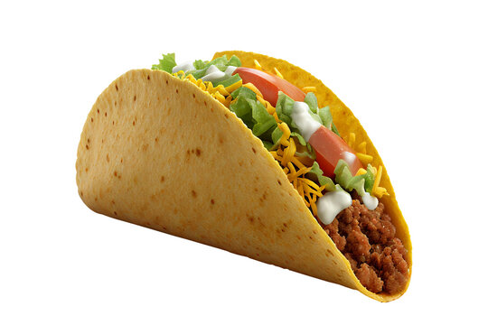

Tacos

Tacos are a traditional Mexican dish consisting of small hand-sized corn or wheat tortillas topped with a filling.
The tortilla is then folded around the filling and eaten by hand.
Ingredients
- Corn tortillas
- Ground beef or chicken
- Taco seasoning
- Lettuce
- Tomatoes
- Cheese
- Sour cream
- Salsa
Steps
- Cook meat with taco seasoning according to package directions
- Chop lettuce, tomatoes, and other desired vegetables
- Warm tortillas in a dry skillet or microwave
- Assemble tacos by adding meat to each tortilla
- Top with cheese, lettuce, tomatoes
- Add sour cream and salsa
- Serve immediately with lime wedges
Home